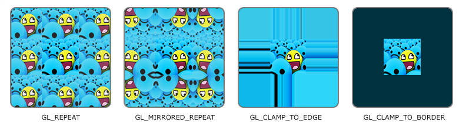

现代 opengl 要求我们必须对顶点着色器和片段着色器进行编程，而写着色器代码使用的语言是一种类 C 的着色器语言（GLSL, OpenGL Shading Language）。
着色器的开头总是要声明版本，接着是输入和输出变量、uniform 和 main 函数，每个着色器入口点都是 main 函数。下面是一个典型的 glsl 代码模板。
#version version_number
in type in_variable_name;
in type in_variable_name;
out type out_variable_name;
uniform type uniform_name;
void main()
{
// 处理输入并进行一些图形操作
...
// 输出处理过的结果到输出变量
out_variable_name = weird_stuff_we_processed;
}
GLSL 定义了 in 和 out 关键字专门来实现这个目的。每个着色器使用这两个关键字设定输入和输出，只要一个输出变量与下一个着色器阶段的输入匹配，它就会传递下去。顶点着色器和片段着色器有点不同。
顶点着色器由于是渲染管线中的第一个着色器，所以顶点着色器的输入变量来自于 cpu，也就是在前一篇文章中提到的顶点属性（vertex attribute）。我们在 vbo 上定义数据，配置 vao 告诉 gpu 如何解析顶点数据。另外顶点着色器必须输出 gl_Position 变量，gl_Position 是 GLSL 内置变量，名称固定。
片段着色器需要一个 vec4 颜色输出变量，因为片段着色器需要生成一个最终输出的颜色。如果你在片段着色器没有定义输出颜色，OpenGL会把你的物体渲染为黑色（或白色）。这个输出颜色变量名称可以自己指定任意合法的名称，例如定义 out vec4 FragColor;。
所以如果我们打算从一个着色器向另一个着色器发送数据，我们必须在发送方着色器中声明一个输出，在接收方着色器中声明一个类似的输入。当类型和名字都一样的时候，OpenGL就会把两个变量链接到一起，它们之间就能发送数据了
从 cpu 上传递数据到 gpu 上除了使用顶点属性（vertex attribute）外，还可以使用 uniform 变量。uniform 和顶点属性不同的是 uniform 是全局的（Global），全局意味着 uniform 变量必须在每个着色器程序对象中都是独一无二的，而且它可以被着色器程序的任意着色器在任意阶段访问。而顶点属性只能被顶点着色器访问。此外，无论你把 uniform 值设置成什么，uniform 会一直保存它们的数据，直到它们被重置或更新。
glsl 中通过 uniform 关键字声明 uniform。
#version 330 core
out vec4 FragColor;
uniform vec4 ourColor; // 在OpenGL程序代码中设定这个变量
void main()
{
FragColor = ourColor;
}
uniform是全局变量，我们可以在任何着色器中定义它们，而无需通过顶点着色器作为中介。
在 OpenGl 程序中设置 Uniform，需要先找到着色器中 uniform 属性的索引/位置。得到 uniform 的索引/位置值后，就可以更新它的值了。比如：
float timeValue = glfwGetTime();
float greenValue = (sin(timeValue) / 2.0f) + 0.5f;
int vertexColorLocation = glGetUniformLocation(shaderProgram, "ourColor"); // 获取 ourColor 的位置
glUseProgram(shaderProgram); // 设置值之前必须先执行 glUseProgram，因为他是在当前激活的着色器程序中设置 uniform 的
glUniform4f(vertexColorLocation, 0.0f, greenValue, 0.0f, 1.0f); // 设置 ourColor 的值
纹理可以理解为存储在 GPU 中的一块图像或数据。
最常见的用途是把一张二维图片贴到几何体表面：
顶点纹理坐标
↓
在纹理中找到对应位置
↓
读取纹素颜色
↓
片段着色器输出颜色
GLSL 中通过 sampler2D 访问二维纹理：
uniform sampler2D ourTexture;
void main()
{
FragColor = texture(ourTexture, TexCoord);
}
其中：
ourTexture：纹理采样器；TexCoord：纹理坐标；texture()：根据纹理坐标读取纹理颜色。纹理坐标用于描述几何体上的点对应纹理图片的哪个位置。
二维纹理坐标通常写成：
(s, t)
也经常写成：
(u, v)
标准范围一般为：
s ∈ [0, 1]
t ∈ [0, 1]
对应关系：
(0,1) ───────── (1,1)
│ │
│ texture │
│ │
(0,0) ───────── (1,0)
例如给矩形设置纹理坐标：
float vertices[] = {
// 位置 // 纹理坐标
0.5f, 0.5f, 0.0f, 1.0f, 1.0f,
0.5f, -0.5f, 0.0f, 1.0f, 0.0f,
-0.5f, -0.5f, 0.0f, 0.0f, 0.0f,
-0.5f, 0.5f, 0.0f, 0.0f, 1.0f
};
顶点着色器将纹理坐标传递给片段着色器：
#version 330 core
layout(location = 0) in vec3 aPos;
layout(location = 1) in vec2 aTexCoord;
out vec2 TexCoord;
void main()
{
gl_Position = vec4(aPos, 1.0);
TexCoord = aTexCoord;
}
片段着色器接收插值后的纹理坐标：
in vec2 TexCoord;
uniform sampler2D ourTexture;
void main()
{
FragColor = texture(ourTexture, TexCoord);
}
三角形内部每个片段的纹理坐标由顶点纹理坐标自动插值得到。
当纹理坐标超出 [0,1] 时，OpenGL 需要决定如何读取纹理，这就是纹理环绕方式。
例如：
TexCoord = (1.5, 0.5)
横坐标已经超出了纹理范围。
常见环绕方式如下。

GL_REPEAT #重复纹理。
glTexParameteri(
GL_TEXTURE_2D,
GL_TEXTURE_WRAP_S,
GL_REPEAT
);
glTexParameteri(
GL_TEXTURE_2D,
GL_TEXTURE_WRAP_T,
GL_REPEAT
);
GL_MIRRORED_REPEAT #重复纹理，但相邻纹理镜像翻转。
GL_CLAMP_TO_EDGE #超出范围后，使用纹理边缘的颜色。
常用于避免纹理边缘出现接缝。
GL_CLAMP_TO_BORDER #超出纹理范围后，使用指定的边框颜色：
float borderColor[] = {
1.0f, 1.0f, 1.0f, 1.0f
};
glTexParameterfv(
GL_TEXTURE_2D,
GL_TEXTURE_BORDER_COLOR,
borderColor
);
二维纹理有两个方向：
S：水平方向
T：垂直方向
因此一般需要分别设置：
glTexParameteri(
GL_TEXTURE_2D,
GL_TEXTURE_WRAP_S,
GL_REPEAT
);
glTexParameteri(
GL_TEXTURE_2D,
GL_TEXTURE_WRAP_T,
GL_REPEAT
);
纹理过滤用于解决：
屏幕像素与纹理像素不能一一对应时，应该如何计算颜色。
纹理中的一个像素称为：
Texel，纹素
英文全称为 Texture Element。
OpenGL 中主要有两种基础过滤方式。
GL_NEAREST #选择距离纹理坐标最近的一个纹素：
glTexParameteri(
GL_TEXTURE_2D,
GL_TEXTURE_MAG_FILTER,
GL_NEAREST
);
特点：
GL_LINEAR #读取附近多个纹素并进行线性插值：
glTexParameteri(
GL_TEXTURE_2D,
GL_TEXTURE_MAG_FILTER,
GL_LINEAR
);
特点：
OpenGL 将过滤分为两种情况。
放大过滤：纹理比较小，但显示在较大的屏幕区域：
64 × 64 纹理
↓
显示为 500 × 500
通过下面的参数设置：
GL_TEXTURE_MAG_FILTER
可选值主要是：
GL_NEAREST
GL_LINEAR
缩小过滤：纹理比较大，但显示在较小的屏幕区域：
1024 × 1024 纹理
↓
显示为 20 × 20
通过下面的参数设置：
GL_TEXTURE_MIN_FILTER
缩小时可以使用普通过滤，也可以配合 Mipmap。
Mipmap 是同一张纹理的一系列不同分辨率版本。
例如原始纹理为：
Level 0：1024 × 1024
Level 1： 512 × 512
Level 2： 256 × 256
Level 3： 128 × 128
...
最终： 1 × 1
当物体靠近摄像机时，使用较高分辨率纹理；当物体远离摄像机时，使用较低分辨率纹理。
作用：
上传原始纹理后，可以自动生成 Mipmap：
glGenerateMipmap(GL_TEXTURE_2D);
常见的 Mipmap 缩小过滤方式：
GL_NEAREST_MIPMAP_NEAREST
GL_LINEAR_MIPMAP_NEAREST
GL_NEAREST_MIPMAP_LINEAR
GL_LINEAR_MIPMAP_LINEAR
最常用的是：
glTexParameteri(
GL_TEXTURE_2D,
GL_TEXTURE_MIN_FILTER,
GL_LINEAR_MIPMAP_LINEAR
);
它会：
这种方式通常称为三线性过滤。
Mipmap 主要用于纹理缩小，因此不能用于：
GL_TEXTURE_MAG_FILTER
下面这种设置是无效的：
glTexParameteri(
GL_TEXTURE_2D,
GL_TEXTURE_MAG_FILTER,
GL_LINEAR_MIPMAP_LINEAR
);
放大过滤只能使用：
GL_NEAREST
GL_LINEAR
纹理对象用于保存：
创建纹理对象：
unsigned int texture = 0;
glGenTextures(1, &texture);
绑定纹理对象：
glBindTexture(GL_TEXTURE_2D, texture);
绑定以后，后续的纹理设置都会作用于当前绑定的纹理对象：
glTexParameteri(...);
glTexImage2D(...);
glGenerateMipmap(...);
一个着色器可能需要同时读取多张纹理，例如：
OpenGL 通过 纹理单元（Texture Unit） 让着色器可以同时访问多个纹理对象。
可以把纹理单元理解为 GPU 提供的一组“纹理插槽”：
纹理单元 0
纹理单元 1
纹理单元 2
...
sampler2D #假设片段着色器中声明了两个采样器：
uniform sampler2D diffuseMap;
uniform sampler2D normalMap;
这里：
diffuseMap
normalMap
只是 GLSL 中两个 uniform 变量的名称。
它们的类型都是：
sampler2D
也就是二维纹理采样器。
它们本身并不保存纹理图片，也不是 OpenGL 的纹理对象 ID。
采样器保存的是：
应该从哪个纹理单元读取纹理。
例如我们希望：
GLSL sampler 纹理单元
diffuseMap ─────→ 纹理单元 0
normalMap ─────→ 纹理单元 1
首先使用对应的 shader program：
glUseProgram(shaderProgram);
获取 GLSL 中：
uniform sampler2D diffuseMap;
这个 uniform 的位置：
GLint diffuseLocation =
glGetUniformLocation(shaderProgram, "diffuseMap");
然后设置：
glUniform1i(diffuseLocation, 0);
这里的：
0
表示：
diffuseMap从 纹理单元 0 读取纹理。
同样：
GLint normalLocation =
glGetUniformLocation(shaderProgram, "normalMap");
glUniform1i(normalLocation, 1);
表示：
normalMap从 纹理单元 1 读取纹理。
因此现在建立了：
diffuseMap → 纹理单元 0
normalMap → 纹理单元 1
注意这里传入的：
0
1
是纹理单元编号，不是纹理对象 ID。
假设 CPU 中已经创建好了两个纹理对象：
GLuint diffuseTexture;
GLuint normalTexture;
例如：
diffuseTexture = 5
normalTexture = 12
其中 5、12 是 OpenGL 纹理对象 ID。
现在把 diffuseTexture 绑定到纹理单元 0：
glActiveTexture(GL_TEXTURE0);
glBindTexture(GL_TEXTURE_2D, diffuseTexture);
含义是：
纹理单元 0
↓
绑定纹理对象 diffuseTexture
再把 normalTexture 绑定到纹理单元 1：
glActiveTexture(GL_TEXTURE1);
glBindTexture(GL_TEXTURE_2D, normalTexture);
于是：
纹理单元 1
↓
绑定纹理对象 normalTexture
最终完整关系是：
GLSL sampler 纹理单元 OpenGL 纹理对象
diffuseMap ───→ Unit 0 ───→ diffuseTexture
ID = 5
normalMap ───→ Unit 1 ───→ normalTexture
ID = 12
这是理解纹理单元最重要的关系。
GLSL：
uniform sampler2D diffuseMap;
uniform sampler2D normalMap;
in vec2 TexCoord;
out vec4 FragColor;
void main()
{
vec4 diffuseColor =
texture(diffuseMap, TexCoord);
vec3 normal =
texture(normalMap, TexCoord).rgb;
FragColor = diffuseColor;
}
当执行：
texture(diffuseMap, TexCoord)
实际查找过程可以理解为：
diffuseMap
↓
里面保存的是 0
↓
找到纹理单元 0
↓
纹理单元 0 当前绑定 diffuseTexture
↓
从 diffuseTexture 中采样
而：
texture(normalMap, TexCoord)
则是：
normalMap
↓
里面保存的是 1
↓
找到纹理单元 1
↓
纹理单元 1 当前绑定 normalTexture
↓
从 normalTexture 中采样
片段着色器：
#version 330 core
out vec4 FragColor;
in vec2 TexCoord;
uniform sampler2D texture1;
uniform sampler2D texture2;
void main()
{
vec4 color1 = texture(texture1, TexCoord);
vec4 color2 = texture(texture2, TexCoord);
FragColor = mix(color1, color2, 0.2);
}
CPU 设置采样器：
shader.use();
shader.setInt("texture1", 0);
shader.setInt("texture2", 1);
绘制前绑定纹理：
glActiveTexture(GL_TEXTURE0);
glBindTexture(GL_TEXTURE_2D, firstTexture);
glActiveTexture(GL_TEXTURE1);
glBindTexture(GL_TEXTURE_2D, secondTexture);
shader.use();
glBindVertexArray(VAO);
glDrawElements(
GL_TRIANGLES,
6,
GL_UNSIGNED_INT,
nullptr
);
对应关系：
texture1 → 纹理单元 0 → firstTexture
texture2 → 纹理单元 1 → secondTexture
下面以 stb_image 加载二维图片为例。
unsigned int texture = 0;
glGenTextures(1, &texture);
// 绑定纹理对象
glBindTexture(GL_TEXTURE_2D, texture);
// 设置纹理环绕
glTexParameteri(
GL_TEXTURE_2D,
GL_TEXTURE_WRAP_S,
GL_REPEAT
);
glTexParameteri(
GL_TEXTURE_2D,
GL_TEXTURE_WRAP_T,
GL_REPEAT
);
// 设置纹理过滤
glTexParameteri(
GL_TEXTURE_2D,
GL_TEXTURE_MIN_FILTER,
GL_LINEAR_MIPMAP_LINEAR
);
glTexParameteri(
GL_TEXTURE_2D,
GL_TEXTURE_MAG_FILTER,
GL_LINEAR
);
// 加载图片
int width = 0;
int height = 0;
int channels = 0;
stbi_set_flip_vertically_on_load(true);
unsigned char* data = stbi_load(
"container.jpg",
&width,
&height,
&channels,
0
);
if (data != nullptr)
{
GLenum format = GL_RGB;
if (channels == 1)
{
format = GL_RED;
}
else if (channels == 3)
{
format = GL_RGB;
}
else if (channels == 4)
{
format = GL_RGBA;
}
// 上传图片数据到纹理对象
glTexImage2D(
GL_TEXTURE_2D,
0,
format,
width,
height,
0,
format,
GL_UNSIGNED_BYTE,
data
);
// 生成 Mipmap
glGenerateMipmap(GL_TEXTURE_2D);
}
else
{
std::cerr << "Failed to load texture\n";
}
stbi_image_free(data);
初始化阶段设置 sampler：
shader.use();
shader.setInt("ourTexture", 0);
渲染循环中绑定纹理：
while (!glfwWindowShouldClose(window))
{
glClear(GL_COLOR_BUFFER_BIT);
shader.use();
glActiveTexture(GL_TEXTURE0);
glBindTexture(GL_TEXTURE_2D, texture);
glBindVertexArray(VAO);
glDrawElements(
GL_TRIANGLES,
6,
GL_UNSIGNED_INT,
nullptr
);
glfwSwapBuffers(window);
glfwPollEvents();
}
1. glGenTextures
创建纹理对象
2. glBindTexture
绑定纹理对象
3. glTexParameteri
设置环绕方式和过滤方式
4. 读取图片
获取像素数据
5. glTexImage2D
将像素数据上传到 GPU
6. glGenerateMipmap
生成多级渐远纹理
7. glActiveTexture
选择纹理单元
8. glBindTexture
将纹理对象绑定到纹理单元
9. glUniform1i
让 sampler 指向纹理单元
10. texture()
在片段着色器中采样纹理
最核心的对应关系可以记成：
纹理坐标：决定从纹理的哪里读取
纹理环绕：决定坐标超出 [0,1] 后如何读取
纹理过滤：决定多个纹素如何计算成最终颜色
Mipmap：为远处物体选择合适分辨率的纹理
纹理对象：保存实际纹理数据和参数
纹理单元：连接 sampler 和纹理对象
sampler2D：着色器中用于访问二维纹理的变量
（完）